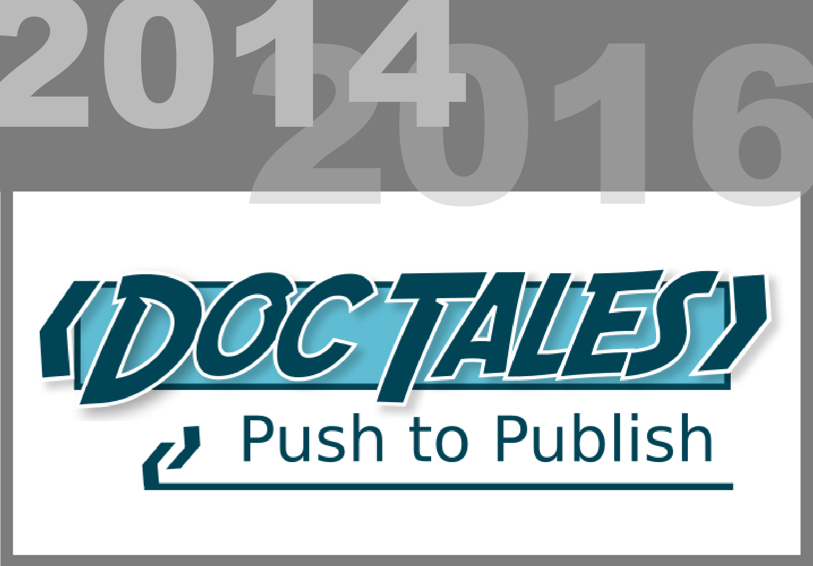
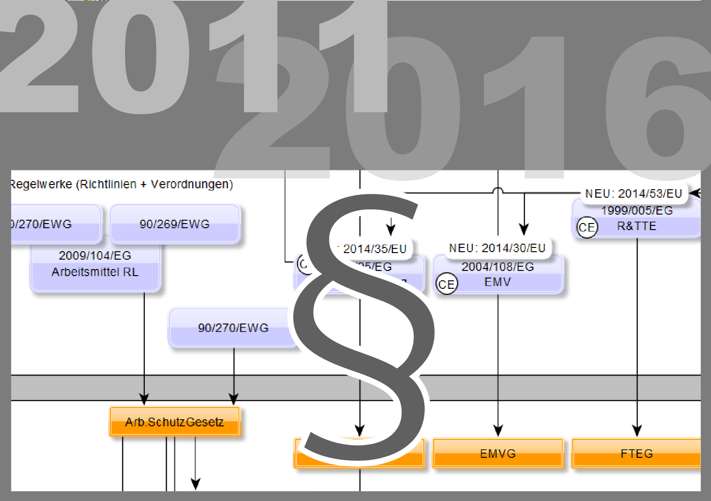
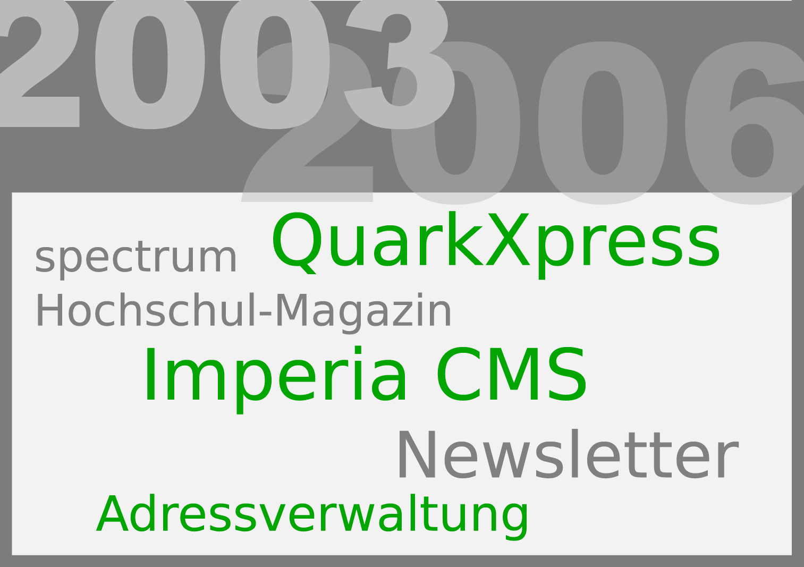
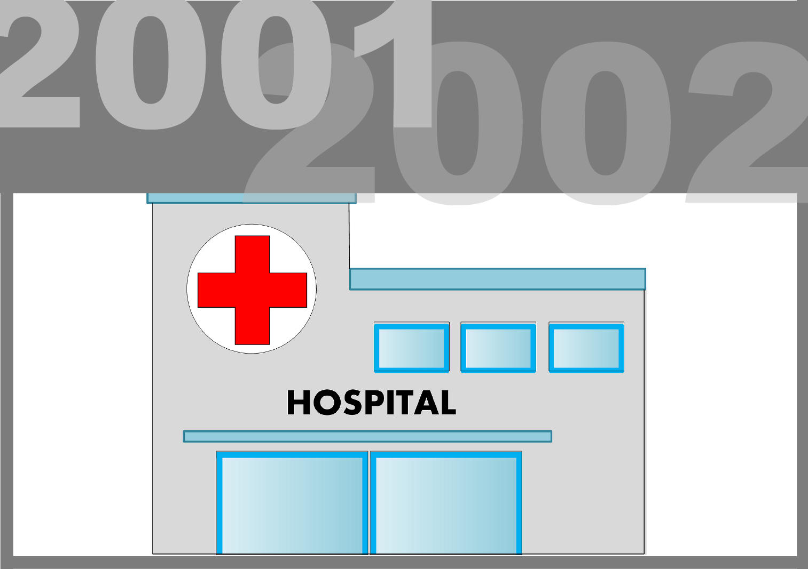

Das Fach der Technischen Redaktion gehört wohl eher zu den unbekannteren
Berufen, deshalb stelle ich als nächstes mein vielfältiges Aufgabenspektrum
vor. Sie werden sehen, dass meine Fähigkeiten auch in ihrem Unternehmen
großes bewirken können.
Informationssammlungen sind in Unternehmen allgegenwärtig und bilden das
Wissensrückgrat ein-jeden Geschäfts. Als Technischer Redakteur ist es meine
Aufgabe, Ordnung und System in die verschiedenen Wissensbereiche und
Aufzeichnungswelten zu bringen.
Dazu gehört nicht nur, Texte oder Visualisierungsmedien zu produzieren und
zu publizieren. Zunächst muss für jede Informationsart die richtige Struktur
konstruiert werden. Dann gilt es, ein passendes Autorenwerkzeug auszuwählen,
das dem Mitarbeiter eine effiziente Arbeitsumgebung bietet und das die
Informationen optimal für alle Zielgruppen im Unternehmen oder öffentlich
bereitstellt.
Benutzerhandbuch
Servicedokumentatiom
Produktdaten
QM-Dokumentation
technische Illustration
Trainingsmaterial
Konformitätserklärung
Wissensmanagement
Terminologie
Lebenslauf , Projekte und Tätigkeiten
Erfahren Sie die entscheidenden Details über meinen Werdengang.
Projekte und Aufgaben wurden im Laufe meines Berufslebens immer wichtiger
und spannender. Damit Sie die interessanten Projekte direkt ansteuern
können, habe ich Ihnen die Meilensteine meines Berufslebens umgekehrt
chronologisch aufbereitet.
Zur schnellen Übersicht: Der Lebenslauf in tabellarischer Form
Vollautomatische Publikation mit umfangreichem Variantenmanagement
2015-2016

Eine Informationsplattform für die deutsche
DITA-Community
2014-2016

Risikomanagement, Sicherheit, UL, CB-Scheme, CE
2011-2016
Prozessgestaltung, Checklisten, Styleguides und
Arbeitspläne
2009-2016
Ein Web-CMS wird zur DITA Redaktionszentrale für
Produktdoku
2008-2014

Aufbau und Leitung der Technischen Redaktion
2008-2016

Diplomarbeit: Aus InDesign per Knopfdruck zur Softwaredoku
2007

Erste Berufserfahrungen im Präsidial- und Pressebüro der FH
Hannover
2003-2006
Studium der Technischen Redaktion an der Fachhochschule
Hannover
2002-2006

Organisation des klinischen Alltags eines
Großstadtkrankenhauses
2001-2002
Grundhandwerk für den späteren Werdegang: Illustration + technisches
Zeichnen
1999-2001
Grundhandwerk für den späteren Werdegang: Illustration + technisches
Zeichnen
1992-1998
- Technologien
- DITA-XML, CSS, Javascript, HTML, XSLT, XSL-FO, XLIFF, TermBase Exchange
(TBX), GIT, SVN, ANT, Markdown, Reveal
- DTP-Werkzeuge
- DITA Open Toolkit, Adobe FrameMaker, MS Office, Adobe CC, SyncROsoft
Oxygen XML Editor
- Wissensrepresentation
- TeamLab (OnlyOffice), yED Graph Editor, Typo3, Joomla, WebHelp,
FreeMind, Atlassian Jira & Confluence, Wikimedia
- Sonstige
- Coding: GITHub, Atlassian Bitbucket, Atlassian Sourcetree, Slack,
StackOverflow
3D: Blender, Autodesk Inventor Publisher
Video-Editing: Magix Video Deluxe
Audio-Editing: Steinberg Wavelab, Propellerhead Reason, Ableton
Live, Audacity

Meine erste transalp Radtour dauerte 14 Tage. Gemeinsam mit sechs
Weggefährten haben wir uns im August 2014 auf den Weg nach Süd Tirol
gemacht. Verzögerung und Entschleunigung.

Mit moderner und leistungsstarker Computertechnologie bietet sich
dem Musiker und Klangforscher ein unermessliches Repatouart an
Möglichkeiten an. Im Jahr 2000 bekam ich von einem Freund die
Software Reason von Propellerheads auf den Rechner gespielt. Damit
begann mein Interesses an Klangkunst.
Die Digitalkamera gehört wohl zu den beliebtesten Werkzeugen eines
Technischen Redakteurs. Vielleicht habe ich deshalb auch gern
abseits des Berufs den Finger am Auslöser. Meist habe ich dann die
Natur und Umwelt im Fokus und versuche ihre besondere Kraft im
Kleinen wie im Großen einzufangen..
Lebenslauf
| 1988-1992 |
Beginn meines Bildungswegs in der Grundschule, Beckedorf |
|
|
| 1992-1999 |
Schulbildung an der IGS Schaumburg in Stadthagen mit erfolgreichem
Abschlusses (erweiterter Sekundär-2-Abschluss) |
|
|
| 1999-2001 |
Fachoberschule Gestaltung, Hannover unter Erlangung der
Fachhochschulreife |
|
|
| 2001-2002 |
Zivildienst im KKH Siloah, Hannover |
|
|
| 2002-2007 |
Studium der Technischen Redaktion an der Fachhochschule Hannover mit
Abschluss als Diplom-Redakteur (FH) |
|
|
| 01/2007- 06/2007 |
Semesterpraktikum und Diplomarbeit in der Technischen Redaktion der
Vectron Systems AG, Münster |
|
|
| 08/2007- 11/2007 |
Reise durch Kanada- und die Vereinigten Staaten |
|
|
| 2008-heute |
Aufbau und Leitung der Technische Redaktion der Rein Medical GmbH,
Mönchengladbach |
|
|
| 2009-heute |
Aktives Mitglied der Qualitätsmanagement-Teams der Rein Medical GmbH,
Mönchengladbach |
|
|
| 2012-heute |
Regulatory Affairs Manager und Normspezialist der Rein Medical GmbH,
Mönchengladbach |
Projekte
| 2008 |
Konzeption und Aufbau einer Redaktionsumgebung auf Basis von Typo3
(Web-CMS), Adobe FrameMaker8 und DITA-XML für die Technische Redaktion
der Rein Medical GmbH, Mönchengladbach |
|
|
| 2014-heute |
Aufbau des Open-Source-Projekts DocTales zur Unterstützung des DITA-XML
Standards |
|
|
| 2014-2015 |
Umstellung der Redaktionsumgebung von FrameMaker8 und Typo3 auf den
OxygenXML-Editor und das DITA Open-Toolkit für die Technische Redaktion
der Rein Medical GmbH, Mönchengladbach |
×
Kurzanleitung, Gebrauchsanweisung und Produkthandbuch
Die klassische Produktdokumentation ist mein Basishandwerk. Anleitungen, Handbücher
und Produktinformationen fallen überall dort an, wo Komponenten, Geräte und Dienste
von Anwendern verstanden werden sollen.
Gutes Begleitmaterial erklärt den Anwendern das Produkt verständlich und erfüllt alle
rechtlichen Anforderungen. Eine Anleitungen repräsentiert aber auch das Image des
Unternehmens. Trotz seiner Rolle zur Sicherheit und Kundenzufriedenheit, müssen die
Kosten für die Doku im Rahmen bleiben. Ohne die richtige Planung und Vorgehensweise
kann die schnell aus dem Ruder laufen, vor allem dann, wenn Dokumente in vielen
Sprachen auf internationalen Märkten bereit gestellt werden.
Die Zutaten für ein ordentliches Handbuch sind vielfältig:
- Zielgruppenanalysen,
- enge Begleitung des Produktdesigns und des Risikomanagements,
- die Auswahl geeigneter Medien mit
- spezifisch aufgestellten Informationsarchitekturen und
- perfekt getaktetes Redaktionsmanagement
sind nur die wichtigsten Schritte, die hierfür zu bewältigen sind.
Seit 2008 leite ich die Technische Redaktion der Rein Medical GmbH und bin hier
verantwortlich für die Erstellung, Pflege und Übersetzung der Dokumentation
sämtlicher Eigenprodukte des Hauses. Hierzu zählen IT-Geräte wie LCD-Monitore,
Computer sowie Video-Management-Komponenten und -Software. In dieser Zeit habe ich
zunächst eine Redaktionsumgebung auf Basis des Web-Content-Management-Systems Typo3
aufgebaut, um technische Dokumentation und die Unternehmenswebsite in einer
gemeinsamen Umgebung pflegen zu können. Im laufe der Jahre veränderte sich die
Produktpalette des Unternehmens hin zu einer sehr hohen Variantenzahl. Um dieser
Veränderung Rechnung zu tragen, haben wir die Redaktionsumgebung Ende 2014 erneut
umbestellt. Da wir schon bei der ersten Redaktionsumgebung auf die
softwareunabhängige XML-Datensprache DITA (Darwin Information Typing Architecture)
gesetzt haben, konnten wir die bestehenden Daten sehr einfach und ohne externe
Unterstützung megrieren.
Lesen sie in diesem Zusammenhang auch meine Projektdossiers für den Aufbau der Redaktion
sowie für den Umbau für das Variantenmanagements
×
Probleme lösen statt Fehler suchen
Gute Servicedokumentation zeichnet sich durch zwei wesentliche Merkmale aus.
- Ihre Inhalte müssen möglichst direkt aus der Entwicklung übernommen werden
können und werden idealerweise automatisch um Erkenntnisse aus dem Service
bereichert.
- Servicetechniker müssen je nach Arbeitsweise und Problemstellung auf intuitiven
Wegen an die relevante Information herankommen.
Daher ist besonders für diese Informationsart die richtige Redaktions- und
Publikationsumgebung das "A" und "O". Gerade für Service-Dokumentation können
moderne Webanwendungen und Service-Portale ihre Vorteile ausspielen. Wenn
Entwicklungsdokumentation automatisch in Wissensdatenbanken und mobile Hilfesysteme
übertragen wird und daraus auch bei Bedarf PDF-Dokumente publiziert werden können,
kann Service-Dokumentation einen wichtigen Beitrag zur Effizienz Ihres technischen
Supports liefern.
Als Technischer Redakteur habe ich Erfahrung darin, die Informationsfäden ihrer
service-relevanten Daten zusammen zu halten.
×
Kein Qualtätsmanagement ohne Dokumentation
Egal ob ISO 9001, ISO 13485 oder andere Qualitätsmanagement-Standards: Sie alle
nutzen Dokumentation als Treibstoff, um das Rad der Verbesserung anzutreiben.
Unzählige Aufzeichnungen wollen koordiniert, geführt, freigegeben und archiviert
werden. Vom QM-Handbuch über Prozessbeschreibungen bis hin zu Formblättern,
Arbeitsanweisungen und CAPA-Vorgängen, der von vielen Mitarbeitern als
"bürokratisch" kritisierte Dokumentationsaufwand ist in jedem Qualitätsmanagement
beträchtlich.
Seit 2009 bin ich aktives Mitglied des QM-Teams der Rein Medical GmbH. Als
Technischer Redakteur habe ich ein Gespür dafür, auf welche Weise die verschiedenen
Dokumenttypen erstellt und verwaltet werden können. Mein persönliches Anliegen ist
es dabei, die QM-Landschaft ganz nah an den Mitarbeiter heranzuführen. Nur wenn die
Belegschaft die Prozesse leicht nachvollzieht, sicher und schnell die erforderlichen
Eingaben machen kann und auch weiß, welchen Nutzen er oder sie aus den gewonnenen
Daten ziehen kann, wird das QM-System als solches bei der täglichen Arbeit ein
geschätzter Begleiter. Um dieses Ziel zu erreichen, habe ich besonderen Wert auf
unformalen Sprachgebrauch gelegt und grafisch visualisierte Prozessdarstellungen
entwickelt. Dank eines speziell für das Unternehmen konzipierten Farbcodesystems,
ist es Mitarbeitern leicht möglich, die Dokumenttypen voneinander zu unterscheiden
und einen Überblick über die relevanten Unterlagen zu behalten.
×
Optimal nonverbal
An vielen Stellen sagt eine Illustration mehr als 1000 Worte. In Zeiten der
3D-CAD-Konstruktion und der Digitalfotografie können diese auch schnell erstellt und
in ein publikationsreifes Format gebracht werden. Damals wie heute sind aber für
professionelle Ergebnisse ein effizienter Workflow und erfahrenes Handwerk
unerlässslich.
Seit 10 Jahren arbeite ich mit Adobe® Illustrator®, Photoshop® und weiteren
Werkzeugen, um vielfältigste Visualisierungen für Produktdokumentation und
Marketingmaterial abzubilden. In den letzten Jahren nutze ich zudem Inventor®
Publisher® für die Erstellung von nonverbalen Installationsanleitungen und
technischen Darstellungen aus CAD-Daten.
Über die Jahre entstanden vielfältige grafische Darstellungen für Web- und
Printpublikationen wie Produktvisualisierungen, Maßzeichnungen,
Explosionszeichnungen, Verkablelungspläne, Mindmaps, Prozessdiagramme,
Symbolbibliotheken.
×
Material für Schulung und Training
Von der technischen Produktdokumentation ist es nur ein kleiner Schritt zum internen
oder externen Trainingsmaterial. Für beide Textsorten müssen die belange der
Zielgruppen genau berücksichtigt werden, damit die Dokumente ihren Nutzen erreichen.
Nicht selten können sogar die gleichen Inhalte für beide Welten verwendet werden.
Damit Texte und auch ihre Übersetzungen effektiv wiederverwendet werden können,
müssen die Textstrukturen jedoch von Anfang an vorausschauend konzipiert und Inhalte
kontextunabhängig formuliert werden.
Um Trainingsmaterial auch medial optimal bereitzustellen, nutze ich bewährte Tools
wie Microsoft® Powerpoint® oder DTP-Werkzeuge, schrecke aber auch nicht vor selbst
aufgesetzten webbasierten Lösungen zurück, um interaktive Lernhilfen zu kreieren.
Als DITA-XML-Speziallist habe ich auch bereits dessen Trainingsspeziallisierung
erfolgreich eingesetzt.
×
Produktdaten- und Informationsmanagement
Technische Produktdaten finden sich auf der Website, in Angebotsvorlagen, in
Marketingbroschüren und nicht zuletzt auch in Bedienungsanleitungen wieder.
Allerdings entstehen all diese Publikationen meist in unterschiedlichen Abteilungen
des Unternehmens. Werden diese Daten für jede Publikation individuell erfasst und
verwaltet, sind Fehler und Inkonsistenzen kaum zu vermeiden.
Zur Verwaltung von Produktdaten stehen auf dem Markt vielfältige
Produktdatenmanagementsysteme (PMS) bereit.
- Möglichst viele Daten müssen wiederverwendet werden können.
- Unterschiedliche Zielmedien sollen aus einer Datenquelle entstehen.
- Übersetzungen müssen einfach und sicher verwaltet werden können.
Ich habe bei Rein Medical die Verwaltung der Produktdaten unter die Verantwortung der
Technischen Redaktion gestellt und in dessen bestehendes Instrumentarium integriert.
Die von uns verwendete DITA-XML-Technologie ist in Kombination mit dem richtigen
Datenkonzept und ein paar einfachen Werkzeugen in der Lage, die genannten
Anforderungen an das Produktdatenmanagement zu erfüllen. Die technischen Daten
verwalten wir heute zentral an einer Stelle und bedienen hieraus alle wichtigen
Zielmedien in allen ohnehin für die technische Dokumentation betriebenen Sprachen.
Das flexible Datenformat XML eignet sich bestens, um an Datenbanksysteme und
Publishingwerkzeuge wie Adobe® InDesign® übergeben zu werden.
×
Die EG-Konformitätserklärung: Kompetenznachweis für professionelles Auftreten
Die EG-Konformitätserklärung, im Volksmund auch "CE-Erklärung" oder
"Herstellererklärung" genannt, ist der Fahrschein fast aller Produkte für den freien
Warenverkehr auf dem europäischen Binnenmarkt. Das Dokument, das für viele
Handelswaren vom Hersteller selbst ausgestellt werden kann, muss einem klaren Aufbau
folgen. Durch meine langjährige Erfahrung als Regulatry Affairs Manager und
Normspeziallist des Hauses kenne ich die Details, auf die es bei der Gestaltung
dieses Dokuments ankommt:
- Welche EU-Richtlinien oder -Verordnungen gelten für ein bestimmtes Produkt?
- Welche Normen müssen aufgelistet werden?
- Stimmen die aufgeführten Ausgabenummern und Revisionsdaten?
- Wo und wie muss die CE-Kennzeichnung angebracht werden?
Wenn alle Daten bis ins Detail stimmen, erkennt auch der qualitätsbewusste B2B-Kunde
die Kompetenz Ihres Unternehmens und geschäftsschädigende Lieferverzögerungen auf
internationalen Vertriebswegen durch Regulierungsbehörden und Zoll werden
verhindert.
Mit diesem Wissen unterstütze ich seit 2009 die Konformitätsbewertungsverfahren der
Rein Medical Entwicklung.
×
Wissen ist Macht
Populäre Webtechnologien wie Sozialmedien, Wikipedia und Blogsysteme heben das Thema
Wissensmanagement auf die Agenden vieler Unternehmer. Aber was verbirgt sich
eigentlich hinter diesem Begriff?
Abteilungsübergreifendes Wissensmanagement möchte Fehler und Probleme des
zwischenmenschlichen Informationsaustauschs verringern. Dazu sollen technische
Hilfsmittel möglichst viele Informationen direkt bei ihrser Entstehung auffangen,
strukturiert ablegen und intelligent publizieren, damit alle Mitarbeiter auch bei
späteren Recherchen auf bereits gewonnene Erkenntnisse zurückgreifen können.
Um diese Ziele zu erreichen, können vielfältige Wege beschritten werden. Eine
intelligent vernetzte Zusammenstellung aus Foren, Wikis, Ticketsystemen und
vollintegriertem Dokumentenmanagement, soll lokal gespeicherte und damit für
niemanden erreichbare Dokumente genauso verdrängen, wie das für komplexe
Korrespondenz ungeeignete E-Mail-System, entstanden im frühen Internetzeitalter.
Technische Dokumentation ist nichts anderes als repräsentiertes Wissen. Die Ziele des
Wissensmanagements stehen daher auch bei mir in einem besonderen Fokus, damit
wichtige Informationen schnell und direkt beim Leser ankommen. So haben sich in
meinem Arbeitsumfeld zahlreiche innovative Tools zum Zwecke der gemeinsamen
Wissenssammlung und -repräsentation angesammelt:
Jira®, Confluence®,
OnlyOffice®, SVN, GITHub, Wikimedia, Stackoverflow®, die Liste ist lang und wird
täglich länger.
Wussten Sie übrigens,...
dass mit der neuen Fassung der Qualitätsmanagementnorm ISO 9001:2015 ein
unternehmensweites Wissensmanagement zur Basisanforderung für erfolgreiches
Qualitätsmanagement wird!
×
Eine Sprache für das Unternehmen
Entstehen Ihre Produkte in der Fertigung oder in der Produktion?
Sollen sich Ihre Kunden bei der Reklamationsbearbeitung oder lieber beim
Kundendienst melden?
Wissen Kunden und Servicetechniker, was ein
Entwickler mit einer Klemmvorichtung meint?
Für viele Begriffe gibt es
mehr als ein Wort und manchmal ist es gut, sich auf eine Benennung zu einigen.
Gestalten Sie sich auf diese Weise einen allgemeinen Sprachgebrauch für Ihr
Unternehmen, um interne Kommunikation zu vereinfachen und um sich nach außen
einheitlich zu präsentieren.
Als Technischer Redakteur achte ich genau auf die Wortwahl im Unternehmen und
Missverständnisse fallen mir sofort auf. Von der einfachen Terminologieliste in
einer Excel-Datei bis zur voll integrierten, Autoren unterstützenden Textkontrolle,
beherrsche ich viel Techniken, um die Terminologie des Unternehmens zu definieren
und zu überwachen. Dazu gehört auch ein reibungsloser Datenaustausch mit externen
Stellen wie Marketingbüros und Übersetzern.
×
Knopfdruckdoku ohne Redaktionssystem
Eine sich verändernde Produktlandschaft erfordert
mitunter auch Anpassungen der Redaktionsumgebung für die technische
Dokumentation. Nachdem wir unsere neuen Anforderungen für Textbearbeitung,
Dokumentenmanagement und Übersetzungsmanagement gefunden hatten, stellten wir
innerhalb weniger Monate von Typo3 auf Oxygen XML Editor um. Den Editor
ergänzten wir um das Codeverwaltungssystem GIT, womit wir sowohl Versions- als
auch Übersetzungsmanagement betreiben konnten. Außerdem bauten wir über
GIT-Branches einen Redaktionsworkflow auf. Unser bisheriges Layoutwerkzeug
FrameMaker viel aus dem neuen Prozess heraus. Dank des DITA-Open-Toolkits
publizieren wir heute ohne manuelle Nachbearbeitung der Dokumentgestalt und
sparen wertvolle Zeit. Der Umstellungsprozess gestaltete sich dank des
verwendeten offenen DITA-XML-Standards sehr einfach.
Ausgangssituation
Durch neue innovative Lösungen entstand bei der Rein Medical GmbH mit den Jahren
eine hohe Anzahl Produktvarianten. Zu den fest definierten Produkten kam ein
modulares Baukastensystem mit individuell konfigurierbaren Produkten. Das
bisherige "Build-to-Order" Prnzip des Unternehmens entwickelte sich zum
"Design-to-Order", bei dem die Produkte erst kurz vor der Fertigung konstruiert
wurden.
Neue Anforderungen
Mit den neuen Produktkonzepten veränderten sich die Anforderungen an unsere
Redaktionsumgebung entscheidend. Vor allem mussten wir den Publikationsworkflow
wesentlich beschleunigen, damit weiterhin das passende Handbuch rechtzeitig im
Karton lag. Das Redaktionsteam identifizierte eine Hand voll Anforderungen an
unsere Arbeitsumgebung:
- Der administrativen Aufwand für die Publikation musste gesenkt werden
- Das Übersetzungsmanagement musste beschleunigt werden
- Der Aufwand für Layoutbereinigung musste verringert werden
Konzept
Um diese Ziele zu erreichen, sollte das Dokumentlayout künftig vollständig
automatisiert gesetzt werden, da die manuelle Nachbearbeitung mit FrameMaker
bisher sehr hohen Aufwand für jedes einzelne Rollout bedeutete. Ferner musste
das Authoring beschleunigt werden. Der in Typo3 eingebundene XML-Editor war in
die Jahre gekommen und wurde nicht mehr weiterentwickelt. Die webbasierte GUI
des Editors war nicht schnell und robust genug, um den harten Anforderungen des
Redaktionsalltags gerecht zu werden.
Obwohl zunächst geplant war, das Typo3-basierte Redaktionssystem
weiterzuentwickeln, entschieden wir uns nach intensiver Abwägung für eine
radikalere Strategie.
Wir erkannten, dass XML-Editoren inzwischen sehr gut auf DITA vorbereitet waren
und umfangreiche Funktionen für das DITA-Authoring bereitstellten. Um diesen
Funktionsumfang in die Typo3-Umgebung zu implementieren, wären kostenintensive
Entwicklungsarbeiten nötig gewesen. Im Gegensatz dazu waren die Editoren für
wenige 100 Euro konkurrenzlos günstig. Alle weiteren Hilfsmittel waren
Open-Source und damit kostenlos und mussten nur einsatzbereit gemacht werden.
Das gute Übersetzungsmanagement aus Typo3 mussten wir opfern und mit geeigneten
Mitteln neu aufstellen.
Ferner sollte der Layoutprozess vereinfacht und beschleunigt werden. Bisher
hatten wir DITA Material für eine Publikation aus Typo3 exportiert und in
FrameMaker importiert. Dieser wurde genutzt, um das Layout zu optimieren und
PDFs zu publizieren. Wir evaluierten die Fähigkeiten des aktuellen DITA
Open-Toolkits. Wir erkannten, dass dessen Fähigkeiten für unsere Aufgaben
ausreichten. Da das DITA OT nahezu synchron zum DITA-Standard entwickelt wurde,
konnten wir von den Funktionen des aktuellsten DITA-Standard 1.3 profitieren. Da
ein Wechsel zurück zu FrameMaker auch nachträglich ohne Weiteres entschieden
werden konnte, stellten wir die Publikationsseite auf das DITA-OT um.
Nachfolgende Darstellung illustriert den neuen Workflow unserer
Redaktionsumgebung 
Codeverwaltung
Für das Dokumentenmanagement setzten wir auf das Codeverwaltungssystem GIT. Damit
konnten wir Freigaben und Übersetzungen über Branches steuern und hatten das
gesamte Versionsmanagement im Griff.
Texterfassung
Nachdem der geeignetste Editor Oxygen XML von SyncROsoft ausgewählt war, ging es
an die Datenübernahme aus Typo3. Diese gestaltete sich denkbar einfach, da wir
ja bereits in Typo3 DITA-XML verwendeten. Wir stellten lediglich auf einige neue
Funktionen des DITA Standards 1.2 um und beseitigten ein paar Workarounds die
wir für Typo3 eingehen mussten.
Nach 6 Wochen konnten wir die ersten Publikationen ausschießen.
×
Doctales
Eine Informationsplattform für die deutsche DITA-Community
2014-2016
×
Regulatory Affairs Manager
Eine Informationsplattform für die deutsche DITA-Community
2014-2016
×
QM-Dokumentar
Eine Informationsplattform für die deutsche DITA-Community
2014-2016
×
Typo3 mit DITA als Redaktionslösung im Eigenbau
Eine Informationsplattform für die deutsche DITA-Community
2014-2016
×
Adobe® InDesign® + DITA = Onlinehilfe
Eine Informationsplattform für die deutsche DITA-Community
2014-2016
×
Präsidialbüro- und Pressearbeit für die FHH
Eine Informationsplattform für die deutsche DITA-Community
2014-2016
×
Diplomstudium an der FHH, Fakultät Elektrotechnik
Eine Informationsplattform für die deutsche DITA-Community
2014-2016
×
Zivildienst im KKH Siloah, Hannover
Eine Informationsplattform für die deutsche DITA-Community
2014-2016
×
Gestalterausbildung
Eine Informationsplattform für die deutsche DITA-Community
2014-2016
×
Schulabschluss
Eine Informationsplattform für die deutsche DITA-Community
2014-2016
×